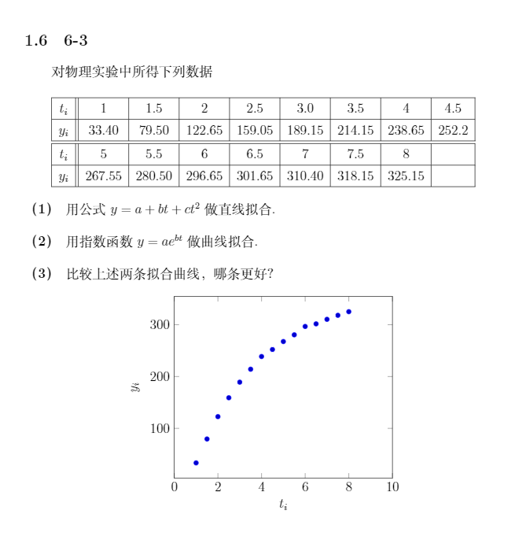

这是一篇从公众号搬运过来的旧博客，进行了一定的修改。
今天算是彻底写完了数值分析实验报告，做了一份新的模板（gist，Overleaf项目），比原来好看了很多（至少我觉得是这样）。从网上抄来了新的格式化代码和制作三线表的方法，学习了tikzpicture环境的使用（这个环境竟然能算线性回归……LaTeX真是图灵完全啊），就算是新学会了一点东西吧。虽然我很菜，但还是把这点进步记了下来。

总的来说，这些实验题都很简单（几乎就是翻译书上的伪代码……）。我用的是C++，因为不想自己造轮子，所以在网上找了一个叫做Eigen的轻量级的模板库[1]（好处是，不用编译链接……我差点要去用LAPACK这样的轮子来着）。写起来感觉还可以，但是在算Cholesky分解时，结果总是和用Matlab（一般，我总是称它为……马特拉博）的同学有一点微妙的差别，我最后还是不知道为什么。
最后我心想，为啥我不去用马特拉博，非要用C++写，给自己添了这么多的麻烦呢？然后我想起来了这两个原因：
-
电脑空间快爆了。为此我甚至把win10版的bilibili客户端都删了。[2]我本来是装过马特拉博的，但看到它占用了高达10G的空间，又删掉了。其实我应该把它装到我的备用旧电脑上的。[3]
-
懒得学马特拉博。
结果，我发现，给自己添了这么多事儿，还不如当初别犯懒去学一学呢。有鉴于我这个学期糟糕的学习状态，我觉得从本学期期末开始到未来的一段时间内，都将经常总结出同一个教训，并最终从中学到什么东西。
（但也没准会是学到了不为打翻的牛奶而哭泣的思维方式）[4]
在做1-3题的时候，在网上找到了一篇特别好的介绍精度的文章，解决了我的一些奇怪的问题（实际上好像是一位谷歌工程师写的系列文章）：Float Precision–From Zero to 100+ Digits。如果有时间的话，我很想把它仔细研究一下，翻译出来，但是我没有时间。
（以下内容参考上述文章，但进行了极大的省略）
在实验中，当我（使用setprecision）尝试把输出位数设为比较大的数字（比如30）的时候，发现C++只会打印出17位有效数字，无论对于float还是double，都是这样的。开始时这使我百思不得其解：书上不是说，单精度浮点数大约有7位正确的有效数字，而双精度有15位有效数字吗？为什么都会打印出17位？
事实上，我们首先需要区分至少两种“精度”（其实，我想说：事实上，我是个傻逼）：
- 由书上所讲的机器精度（即将实数x用浮点数表示的相对误差上限）导出的有效数字位数。
- 在十进制中准确表示二进制数所需的数字位数。
第一种精度即书上所讲的7或15位（事实上，有许多例外情况，对于单精度浮点数，0-9位的精度都有可能产生，但6-7位是一般情况，请参见我引用的那篇文章）。而对于第二种情况，经过计算和实验可知，单精度浮点数的“精度”可能从0位到112位不等。作者找到的“精度”最大的（即从float转换成准确的十进制之后位数最多）的数是：
1.175,494,210,692,441,075,487,029,444,849,287,348,827,052,428,745,893,333,857,174,530,571,588,870,475,618,904,265,502,351,336,181,163,787,841,796,875e-38
（这个数在原文中属于“subnormal”一类，意思是阶码为0，表示尾数没有进行规格化处理，只有23位；而这个数的23位阶码都是1，很容易理解为什么它的“精度”最大了。）
然而，在VC++（以及我自己的g++编译环境）中，系统并不会打印出比17位更多的有效数字。17位十进制有效数字足以唯一确定任何单精度或双精度的浮点数，而且可以保证从double转成十进制再转回double仍是原来的数（虽然有点反直觉，但这是真的）（对于float，这一数字应该是9位），但很显然并不能准确表示其中的数值。
所以，准确打印出浮点数转换成的十进制数这个问题比它看起来的要更难一些。
期末将至，更新频率可能会降低，但因为我现在把做推送当成是一种放松方式，所以也没准会增多。人生在世，活得开心是最重要的。[5]
最近我也意识到，下个学期的课程负担极其繁重，如果能活下来，上完所有的课，不挂科，就算很不错了。[6]
我决定好好学习数值分析，把课后习题都做一遍，也许将来会把答案整理出来。虽然喻文健的这本书没有题解，但他的很多题目都和李庆扬的那本差不多，或者说是完全一样。[7]
这是数值分析演示网站（但是我估计没人会去看这个演示的，还要装Java Runtime Environment，而且没什么用==）
在网上发现了一个学长写的微积分及线代和数值分析的总结，感觉很有趣，把链接贴在这里：Things of Math[8]
我觉得他写得很通俗易懂，可以帮助我理解书上的很多算法。
我好像做不了这样高屋建瓴的总结，但是我觉得，认真学习还是会有所收获的。
2019.4.3 UPDATE：喂喂，Eigen真的是“轻量级”模板库吗，现在我知道TensorFlow内部也用的是Eigen了…… ↩
2019.4.3 UPDATE：那破客户端有个毛线用处，还是直接在网页端看比较好。 ↩
2019.4.3 UPDATE：现在我确实把马特拉博装到了旧电脑上，而且不打算删。用C++做数值分析作业就算了，做频谱分析大概是找死。 ↩
2019.4.3 UPDATE：我觉得我正在隔着屏幕看着过去的自己犯傻。实际上这两件事我最后都没学到。现在的我只是做梦都想回到那段《One More Light》还没出完的时光而已。不过现在的我说的废话真是已经够多的了。 ↩
2019.4.3 UPDATE：我最近才意识到这句话是谜之声在实况里常说的…… ↩
2019.4.3 UPDATE：没挂科，但我会宁愿自己已经死了，不过这些也都已经过去了。 ↩
2019.4.3 UPDATE：做倒是大部分都做了，不过整理不存在的。 ↩
2019.4.3 UPDATE：原链接（域名）已经挂了，学长也去腾讯了，看起来很厉害的样子。 ↩